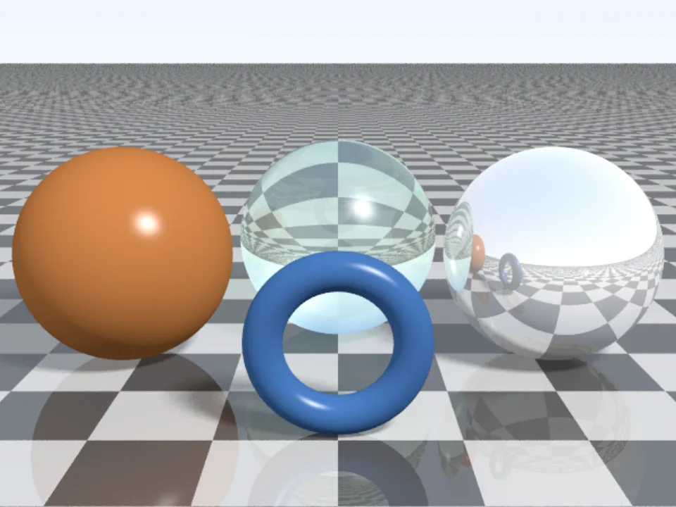
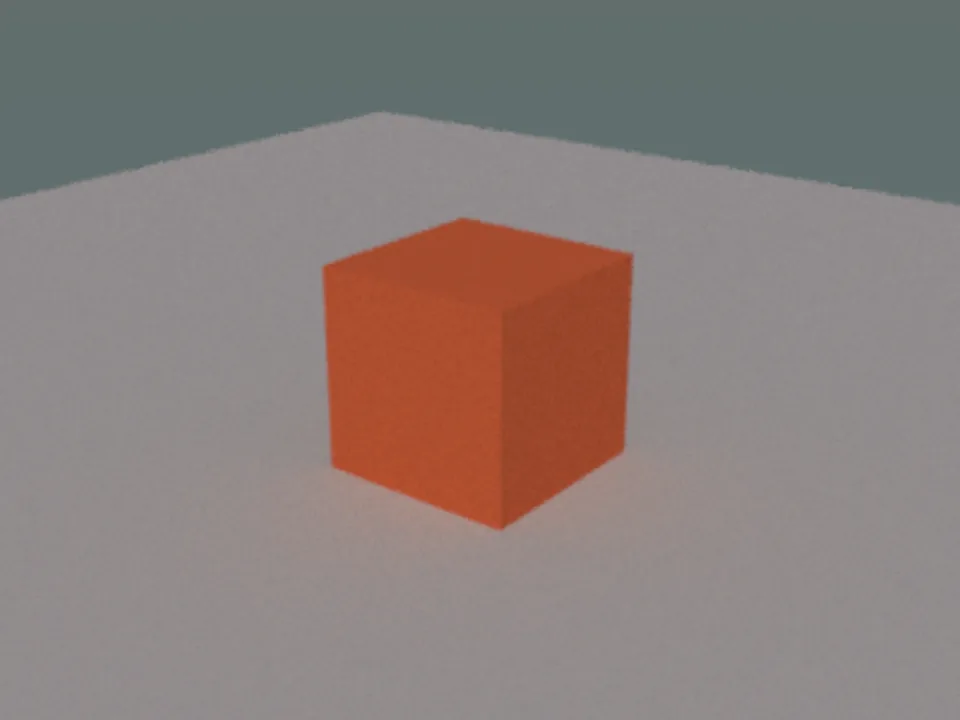
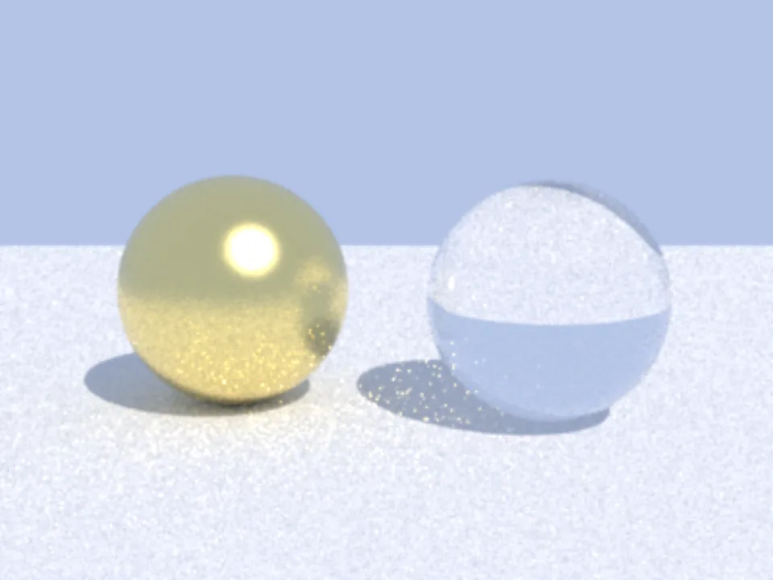
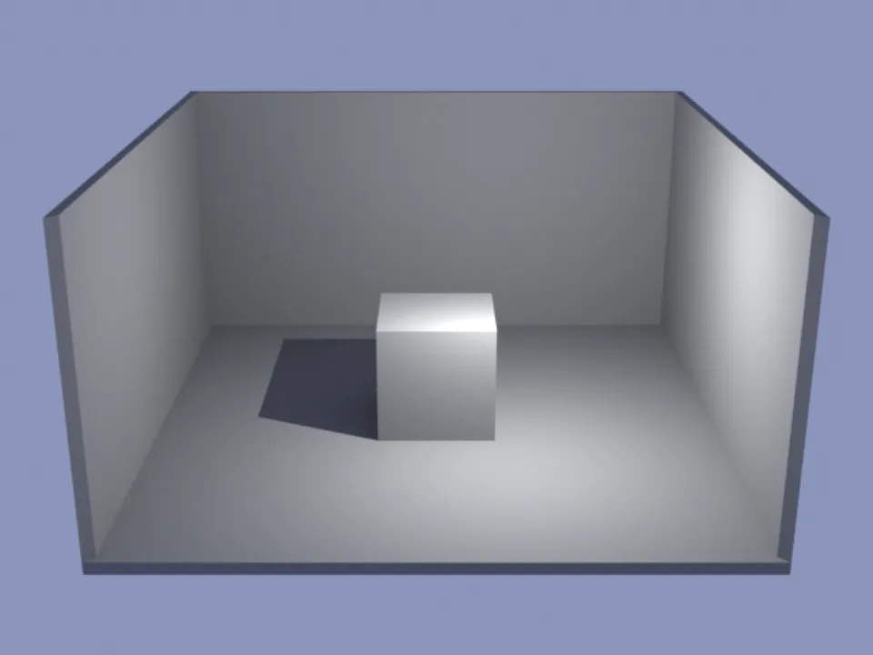
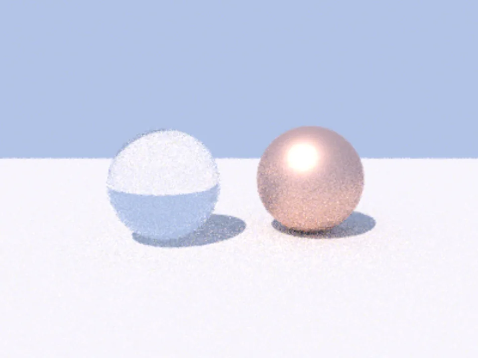
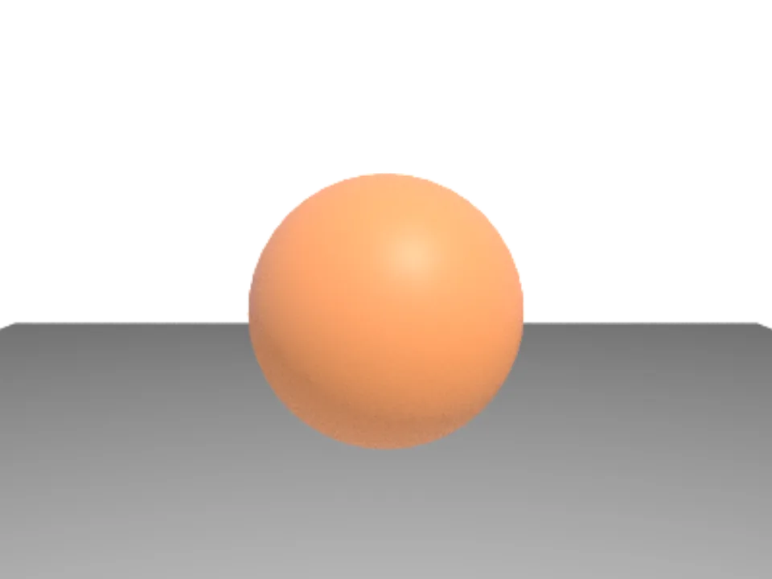
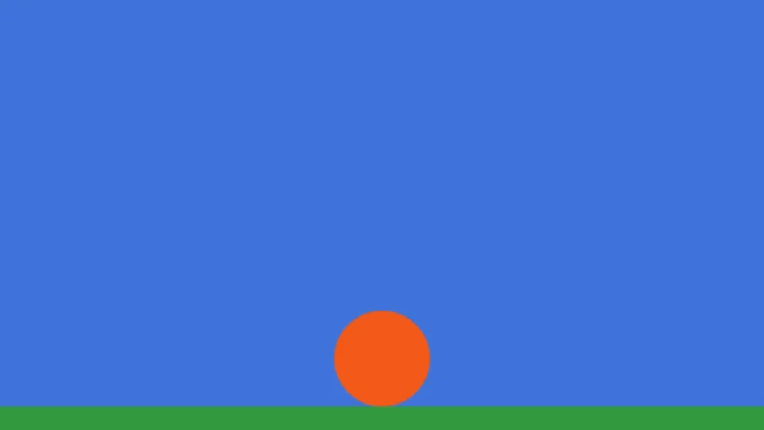
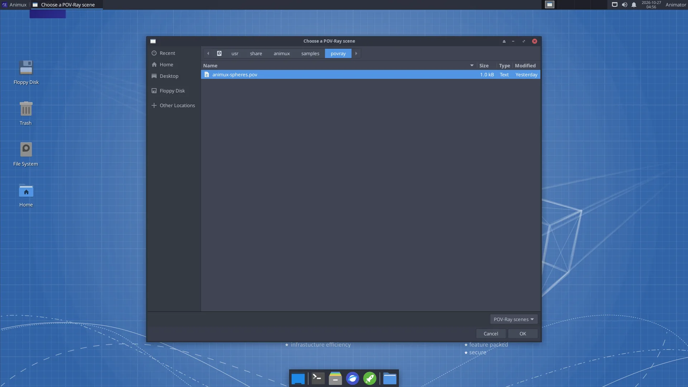

A renderer calculates the final picture from a 3D scene: how light bounces, how glass bends it, how shadows fall. Animux has seven, from very easy to research-grade.
Which one should I use?#
| Renderer | Choose it when | How you use it |
|---|---|---|
| Cycles (in Blender) | Almost always: realistic, fast enough, in the program you model in | Blender → Render Engine: Cycles |
| EEVEE (in Blender) | Fast previews, cartoons, motion graphics | Blender → Render Engine: EEVEE |
| POV-Ray 3.7 | You like describing scenes in text; classic CG, maths art, teaching | menu Renderers → POV-Ray, or povray |
| LuxCoreRender 2.11 | Very realistic light: caustics, glass, interiors | Python scripts (animux-vfx-python) |
| Mitsuba 3 3.9 | Research, spectral rendering, inverse rendering | Python or mitsuba scene.xml |
| appleseed 2.1 beta | Production-style physically based rendering of .appleseed projects |
menu Renderers → appleseed, or appleseed.cli |
| pbrt-v4 | Learning how renderers work, with the book Physically Based Rendering | pbrt scene.pbrt |
All seven side by side, with full names and what each does best: Renderer comparison.
Beginners: use Cycles, explained in Blender and the first-render tutorial.
Processor features
Cycles (Blender 5) and appleseed need SSE4.2; Mitsuba and LuxCore also need AVX. See Requirements.
Try every renderer in two minutes#
Each renderer has a sample scene in /usr/share/animux/samples. The self-test renders all of them and saves the pictures in ~/animux-selftest/<date>/:
animux-selftest povray blender mitsuba luxcore appleseed pbrt gaffer
These are the pictures the self-test made on Animux (in a virtual machine, a few seconds each):















POV-Ray#
POV-Ray reads a text file that describes the scene, and writes a picture.
#include "colors.inc"
camera { location <0, 2, -6> look_at <0, 1, 0> }
light_source { <-5, 10, -10> color White }
plane { y, 0 pigment { checker Gray White } }
sphere { <0, 1, 0>, 1 pigment { color Red } finish { phong 0.8 reflection 0.2 } }
Save that as ball.pov, then either choose 3D Animation → Renderers → POV-Ray and pick the file (the picture opens by itself and is saved in ~/Pictures/povray/), or type:
povray +Iball.pov +Oball.png +W1280 +H720 +A -D
+A turns on anti-aliasing (smooth edges), -D renders without a preview window. Hundreds of example scenes are in /usr/share/povray-3.7/scenes.


LuxCoreRender#
LuxCore is used here as a Python module in Animux's ready-made Python, animux-vfx-python:
animux-vfx-python /usr/share/animux/samples/luxcore/render.py ~/luxcore.png
Read render.py to see how a scene is described (camera, materials, lights) and how long it renders (a time or quality limit). LuxCore's Blender add-on (BlendLuxCore) is not included in r16.
Info
On Animux LuxCore renders on the processor. It ignores the software OpenCL drivers that come with Debian, because they made it crash. On a computer with a real OpenCL GPU driver you can let it use the GPU by starting it with ANIMUX_KEEP_ALL_OPENCL=1.
Mitsuba 3#
mitsuba scene.xml -o out.exr
animux-vfx-python /usr/share/animux/samples/mitsuba/render.py ~/mitsuba.exr
Mitsuba writes EXR images; view them with DJV or convert them: oiiotool ~/mitsuba.exr -o ~/mitsuba.png. Mitsuba 3 can render in RGB or spectral mode, and can compute how the picture changes when the scene changes (for research and machine learning). Documentation: https://mitsuba.readthedocs.io/.
appleseed#
Only the command-line renderer is included (the appleseed.studio editor needs Python 2.7, which Debian 12 no longer has). The menu entry asks for a .appleseed project, renders it and shows the result.
appleseed.cli "/opt/animux/appleseed/examples/cpp/helloworld/reference output/test.appleseed" --output ~/appleseed.png
pbrt-v4#
The renderer from the free online book Physically Based Rendering (https://pbr-book.org/). The book explains every line of its source code.
cd /usr/share/animux/samples/pbrt
pbrt --spp 64 --outfile ~/pbrt.exr animux-spheres.pbrt
imgtool convert ~/pbrt.exr ~/pbrt.png
--spp sets the samples per pixel (quality). The Animux build runs on the processor only. Large example scenes: https://github.com/mmp/pbrt-v4-scenes.
Gaffer + Cycles#
Gaffer can also render with Cycles from a node graph, the way lighting artists work in studios.
Render times, roughly#
| What | Typical time per frame on a 4-core PC |
|---|---|
| EEVEE, 1080p, simple scene | 1–10 seconds (with a graphics card) |
| Cycles CPU, 1080p, 128 samples with denoising | 30 seconds – 5 minutes |
| POV-Ray, 1280×720, sample scene | a few seconds |
| LuxCore / Mitsuba / pbrt, sample scenes | under a minute |
A 2-minute film at 24 frames per second has 2,880 frames. Several minutes per frame quickly means days. Test with small resolution and few samples, and use a render farm or render overnight.